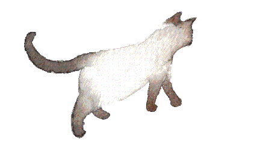

Navegar esta presentación
Usa las flechas (en la esquina inferior derecha de la pantalla) o desliza hacia abajo ('scrollea') en el cel.  Para entrar en detalle en cada sección, navega verticalmente (flechas arriba/abajo) y, para pasar de una sección a otra, usa las flechas izquierda/derecha).Prueba yendo hacia abajo ahora...

La gran mayoría de las personas que utilizan internet lo hacen a través de plataformas hegemónicas como Whatsapp, Google, Instagram, Youtube, Facebook, TikTok y un largo etcétera.
Estas corporaciones "ofrecen" sus servicios de manera "gratuita". A cambio, capitalizan sobre las personas que las usan, extrayendo datos sumamente lucrativos: desarrollan tecnologías de inteligencia artificial, servicios de marketing invasivos, bases de datos con todo tipo de información personal.
¿Y por qué nos debería inquietar? Estas corporaciones colaboran con agentes de control, gobiernos y venden sus productos al mejor postor, incluyendo partidos políticos de extrema derecha y grupos de odio.
Más allá de que tengamos la sensación y/o la certeza de que nos estén vigilando por nuestra actividad/identidad concreta, estamos alimentando una industria que discrimina y vulnera.
Desde el inicio de internet, han existido grupos de personas que han creado tecnologías basadas en otros valores y principios que, si bien pueden tener un modelo comercial o no, están diseñadas para cultivar la privacidad y libertad de las personas que las usan.
El ecosistema de software y cultura libre es muy diverso: desde grandes organizaciones como Ubuntu, Mozilla (Firefox) y Wordpress, hasta pequeños proyectos de una o dos personas.
El principio básico del software libre es habilitar la posibilidad de que grupos puedan obtener información clara y transparente sobre las tecnologías que utilizan (¿cómo funcionan? ¿para qué fines?), gestionar sus propios medios (por ejemplo, alojar su propia red social en su propia "casa") y, en algunos casos, crear sus propias versiones.
Pero, si es tan maravilloso, ¿por qué no son más conocidas y utilizadas estas alternativas?
¡Buena pregunta! Pues, las plataformas hegemónicas tienen mucho poder, básicamente..
Concentran una masa crítica de usuarixs: migrar a plataformas alternativas puede generar una sensación de "quedarse fuera de", aislarse...
Parecieran "más fáciles de usar" porque solemos tener más exposición a ellas y más gente a nuestro alrededor nos sabe echar una mano.
En algunos aspectos "funcionan" muy bien porque tienen miles y miles de trabajadorxs (explotadas, por cierto) detrás operando.
Se pueden permitir el lujo de "no cobrar" porque se lucran a través de nuestros datos.
En cambio, las plataformas alternativas...
Implican una curva de aprendizaje, leer documentación, buscar apoyo, o sea, tener una cierta disponibilidad de tiempo (que no siempre queremos y/o podemos ofrecer).
Funcionan distinto y, a veces, presentan "limitaciones" en su servicio, por ejemplo, ofrecen menos espacio de almacenamiento.
Algunas piden una contribución monetaria para sostenerse o hace falta cubrir el coste de alojar la plataforma en un espacio propio en línea y pedir apoyo a alguien para mantenerla.
Así que sí, es un cambio de formas, de estilo de vida, igual que cuando queremos tomar un vuelco en nuestra relación con la alimentación.
Una cooperativa no busca ser como una multinacional. Una plataforma de tecnologías libres no busca ser un Whatsapp o un Facebook.
Y la verdad es que, gracias a la persistencia y resistencia de proyectos de tecnologías libres, existen hoy en día todo un ecosistema de opciones que pueden ser bastante accesibles con el apoyo necesario.
Existen grupos y personas que se dedican a acompañar a colectivos y redes en estos procesos de transformar las formas de relacionarse con las tecnologías, buscando mayor cuidado y autonomía.
Gente como yo.
Pero...¿tú quien eres?
Me llamo N y llevo 15 años acompañando a compxs en esto. He formado parte de distintos proyectos y redes transhackfeministas y co-fundé una cooperativa de infraestructura que funcionó durante 6 años. He gestionado la infraestructura de redes de abogadas, de colectivas de justicia reproductiva y autodefensa, y muchos otros tipos de asociaciones de defensorxs y activistas. Ahora trabajo por cuenta propia.
Puedes ver ejemplos de mi trabajo en https://nadege.es
Un aspecto esencial al abordar estos procesos desde una perspectiva feminista es cuestionar el paternalismo de "no te preocupes, yo hago todo por ti". En el software y cultura libre se puede dar mucho esa actitud de profetizar y querer convertir a la gente.
"Desmistificar" la noción de tecnologías, generar un ambiente donde sentimos que podemos equivocarnos, despertar lo lúdico y placentero, ofrecer diferentes caminos para diferentes personas y grupos.
Y al mismo tiempo, discernir cuando no tenemos tiempo o capacidad; es importante poder delegar en otres, justo porque ya andamos en el malabarismo del trabajo, el activismo, los vínculos, el espacio propio, el autocuidado...
Ahora veamos ejemplos de plataformas alternativas.
La noción de "nidos digitales" es una derivación de "vecindades digitales", conceptado creado por Liliana Zaragoza Cano (Lili_Anaz) y que busca hacer hincapié en las interconexiones y relaciones en el habitar tecnologías libres.
Porque crear un barrio para nosotrxs es sentir que podemos generar espacios que tienen sentido para nuestras comunidades, desde el lenguaje que se emplea y el aspecto gráfico de sus interfaces hasta las tomas de decisiones (¿qué plataformas y funcionalidades necesitamos? ¿en quién vamos a confiar para manejar nuestros datos privados?).

Sitios web: espacios-puente para compartir inform-acción.
Pueden ser específicamente diseñados para cierta finalidad como:- Blogs: a modo de bitácora
- Repositorios: catálogos organizados de información
- Cursos: espacios de aprendizaje en línea
Wordpress es probablemente una de las herramientas de software libre más conocidas y es empleada por millones de sitios en internet. Se puede instalar en tu propio servidor (infraestructura) y a través de plugins (programas adicionales) configurar para muchísimos usos como los anteriormente mencionados.
Comunicación
Alternativas a Gmail, Zoom, Whatsapp, Mailchimp, Facebook, etc.- Cuentas de correo
- Listas de correo
- Boletines (newsletter)
- Grupos de chat
- Videoconferencias
Desde el origen de internet, antes de la existencia de Whatsapp, Instagram, Zoom, Microsoft y otras plataformas hegemónicas, las personas utilizaban sus medios propios de comuicación. Hay muchas herramientas de software libres disponibles como Mailman, Postfix, Mailtrain, Mattermost, Jitsi Meet.
Encuestas y formularios
Alternativas a Google Drive.Existen herramientas confiables como Limesurvey
Flujos de trabajo: espacios de trabajo colectivo.
Alternativas a Google Drive, Trello, etc.- Archivos & carpetas
- Edición de documentos en línea
- Calendarios & gestión de actividades
- Gestor de proyectos & listas de tareas

Gobernanza colectiva
Alternativa a Whatsapp- Foros de discusiones e intercambio de recursos y procesos
- Herramientas de toma de decisiones: por consentimiento, consenso, consejo
- Grupos y comisiones de trabajo: espaciso de organización y discusión por subgrupos
Espero que esta presentación amplie tu imaginario sobre alternativas más seguras, feministas y autónomas en internet. No dudes en escribirme a contacta@nadege.es.
Gracias por tu tiempo ;)